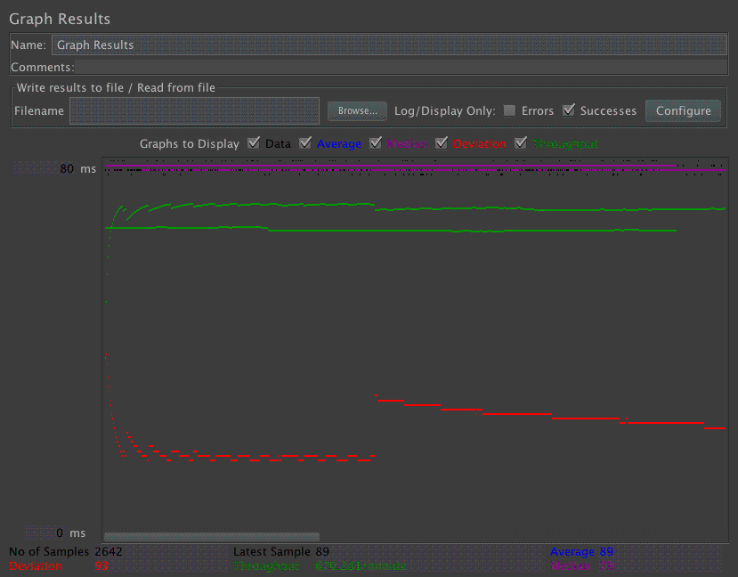
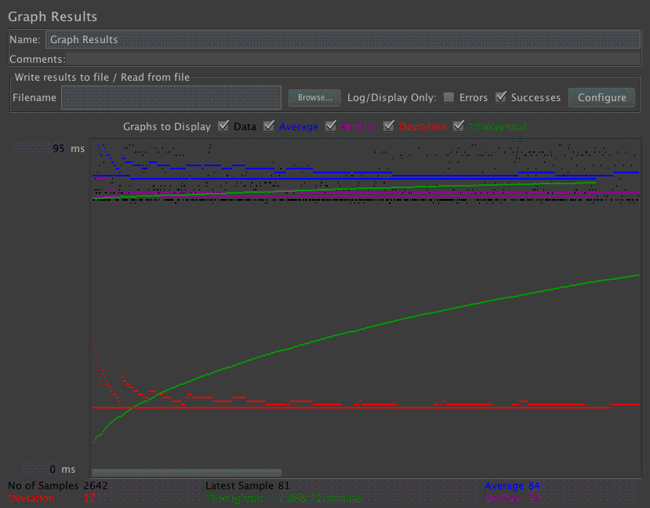
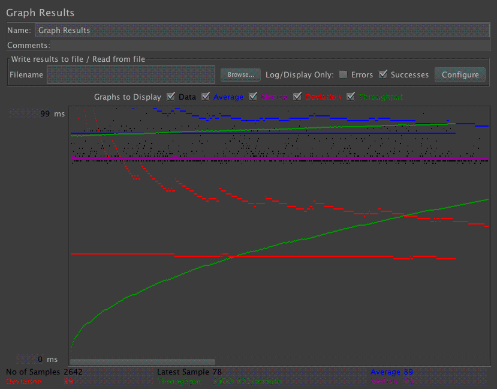
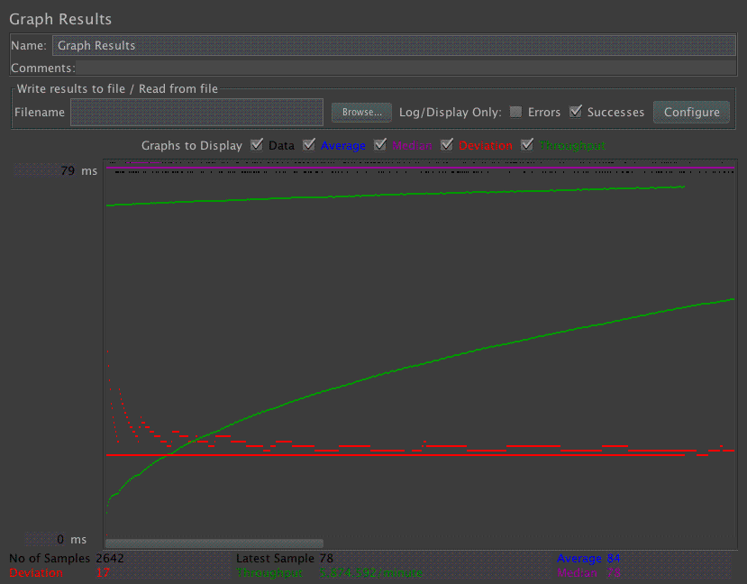
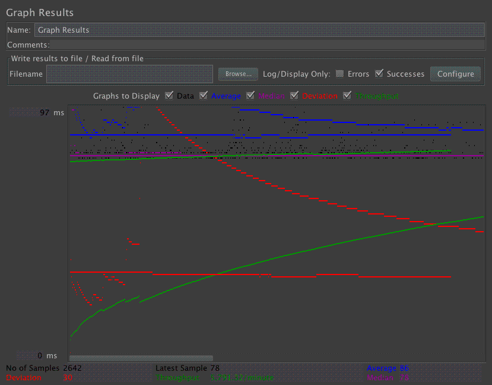

| Single-instance version cases |
Graph Results Screenshot |
Average Query Time(ms) |
Average Search Servlet Time(ms) |
Average JDBC Time(ms) |
Analysis |
| Case 1: HTTP/1 thread |
 |
89 |
1.5199333675246027 |
1.0662397971233915 |
|
| Case 2: HTTP/10 threads |
 |
84 |
2.439450902346707 |
1.6881858440575324 |
-- |
| Case 3: HTTPS/10 threads |
 |
89 |
2.500434522331567 |
1.7617378338380016 |
|
| Case 4: HTTP/10 threads/No prepared statements |
 |
84 |
1.6527303981831944 |
1.1810643141559425 |
|
| Case 5: HTTP/10 threads/No connection pooling |
 |
86 |
2.017341802043906 |
1.5354422255866766 |
|